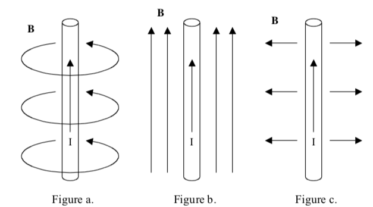
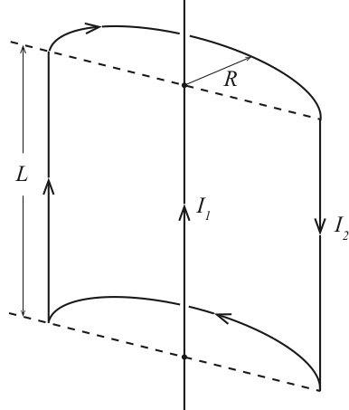
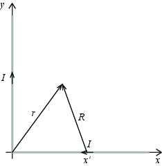
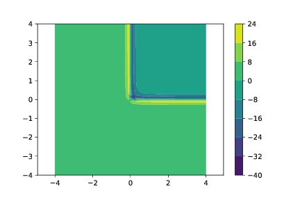
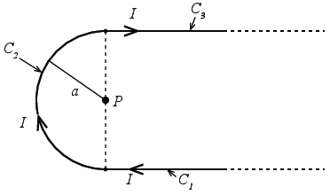
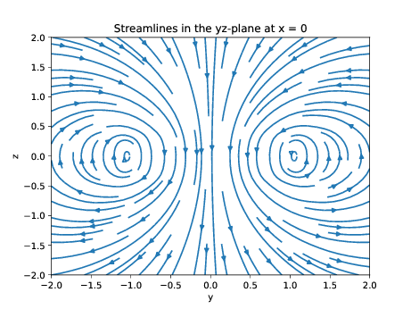
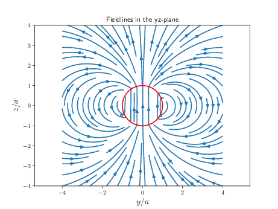
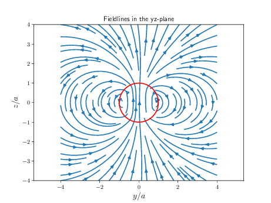
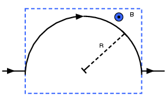

Figuren viser en tynn wire med en uniform strøm \( I \). Dette setter opp et magnetfelt \( \vec{B} \). Hvordan kan vi vite at dette magnetfeltet kun har en tangential (azimuthal) komponent? Hvorfor har det ikke en \( z \)-komponent eller en radielle komponent? Hvordan vil du argumenter for at det ikke er en \( z \) eller \( r \)-komponent i \( \vec{B} \)-feltet? Bruk symmetri eller andre egenskaper ved \( \vec{B} \)-feltet som du kjenner.

Det kan være lurt å tenke på divergensen til \( \vec{B} \)-feltet.
Her er det nyttig å bruke at divergensen til \( \vec{B} \) må være null for å argumenter for at det ikke er noen radiell komponent. Og vi vet at \( \vec{B} \)-feltet må være en normal til strømelementene \( I d \vec{l} \), dermed kan det ikke være noen komponent langs \( z \)-aksen.
La oss tenke oss at en modell for en permanent magnet er at magnetfeltet kommer fra ladninger (for eksempel elektroner) som beveger seg i atomene i form av spinn. Hvordan kan du bruke en slik modell til (i) å si noen om det magnetiske feltet rundt en permenent magnet, (ii) å si noe om hva som skjer om man deler en permanent magnet i to.
Hvordan kan du relatere jordens magnetfelt til modellene for elektromagneter du har lært om denne uken
Jorden har en flytende, metallisk kjerne.
In this tutorial we will focus on building skills in setting up the integrals needed to find the magnetic field from a current distribution using Biot-Savart's law.
We will see how we can find the magnetic field from a line current. There is a current \( I \) in a wire along the \( x \)-axis. The current runs in the positive \( x \)-direction. We want to calculate the resulting field at a position \( \vec{r} = (x,y,z)=(0,0,z) \).
a) Make a drawing of the system. Include a line element \( d\vec{l} \) in your drawing, and the vector \( \vec{R} \). Also express \( \vec{R} \) on coordinate form \( \vec{R} = (R_x,R_y,R_z) \).
b) Find an expression for the contribution \( \d\vec{B} \) to the magnetic field at \( \vec{r} \) from the line element \( \d\vec{l} \). First do it geometrically (without writing vector on Cartesian form), then do it using the Cartesian coordinate form for \( \vec{R} \). (Notice that vector algebra actually works).
\( d B_y = -\mu_0 I \d l /(4 \pi) (z/R^3) \)
First, we do it geometrically without writing the vectors on coordinate form. We know from Biot-Savart's law that $$ \begin{equation} \d \vec{B} = \frac{\mu_0}{4 \pi} \frac{I \d \vec{l} \times \Rhat }{R^2} \; . \tag{8.1} \end{equation} $$ The cross product is $$ \begin{equation} \d \vec{l} \times \hat{R} = |\d \vec{l}| \, |\hat{R}| \, \sin \alpha \tag{8.2} \end{equation} $$ where \( \sin \alpha = z/R \). The direction of the cross product is in the negative \( y \)-direction. The contribution is therefore $$ \begin{equation} \d B_y = -\frac{\mu_0 I \d l}{4 \pi} \frac{z}{R^3} \; . \tag{8.3} \end{equation} $$ We can also find the cross product using the coordinate form of \( \hat{R} = (-x,0,z)/R \) and \( \d \vec{l} = (\d x,0,0) \). We then find that $$ \begin{equation} \d \vec{l} \times \hat{R} = (\d x,0,0) \times (-x,0,z)/R = (0,-\d x \, z,0) \tag{8.4} \end{equation} $$ The result is therefore the same as above.
c) Set up the integral to find the magnetic field \( \vec{B} \) in the case when (i) the line is inifintely long, (ii) the line goes from minus infinity to \( x=0 \), (iii) the line goes from \( x=-L/2 \) to \( x=L/2 \). (For case (ii) and (iii) we would need to connect the wire to other wires for the system to be physically reasonable with a constant current).
In order to set up the integral, we need to insert correct boundary conditions.
For case (i) \( x \) varies from \( - \infty \) to \( + \infty \). $$ \begin{equation} B_i = -\int_{- \infty}^{\infty} \frac{\mu_0 I}{4 \pi} \frac{z}{\left( x^2 + z^2\right)^{3/2}} \d x \tag{8.5} \end{equation} $$
For case (ii) \( x \) varies from \( - \infty \) to \( 0 \). $$ \begin{equation} B_{ii} = -\int_{- \infty}^{0} \frac{\mu_0 I}{4 \pi} \frac{z}{\left( x^2 + z^2\right)^{3/2}} \d x \tag{8.6} \end{equation} $$
For case (iii) \( x \) varies from \( -L/2 \) to \( L/2 \). $$ \begin{equation} B_{iii} = -\int_{-L/2}^{L/2} \frac{\mu_0 I}{4 \pi} \frac{z}{\left( x^2 + z^2\right)^{3/2}} \d x \tag{8.7} \end{equation} $$
You may use that $$ \begin{equation} \int \frac{1}{\left( x^2 + z^2 \right)^{3/2}} \d x = \frac{x}{z^2 \sqrt{ x^2 + z^2}} \; . \tag{8.8} \end{equation} $$
d) Find the \( \vec{B} \)-field in case (i), (ii) and (iii).
We find the solutions by inserting the indefinite integral.
For case (i) we use a trick where we divide by \( |x| \) above and below in the fraction, writing that \( x/|x| = \text{sign}(x) \): $$ \begin{eqnarray} B_i &=& -\frac{\mu_0 I}{4 \pi} \int_{- \infty}^{\infty} \frac{z}{\left( x^2 + z^2\right)^{3/2}} \d x \\ &=& -\frac{\mu_0 I}{4 \pi} \left[ \frac{x}{z \sqrt{ x^2 + z^2}} \right]_{-\infty}^{\infty} \\ &=& -\frac{\mu_0 I}{4 \pi} \left[ \frac{\text{sign}(x)}{z \sqrt{ 1 + (z/x)^2}} \right]_{-\infty}^{\infty} \\ &=& -\frac{\mu_0 I}{4 \pi z}2 = -\frac{\mu_0 I}{2 \pi z} \; . \end{eqnarray} $$
For case (ii): $$ \begin{eqnarray} B_{ii} &=& -\frac{\mu_0 I}{4 \pi} \int_{- \infty}^{0} \frac{z}{\left( x^2 + z^2\right)^{3/2}} \d x \\ &=& -\frac{\mu_0 I}{4 \pi} \left[ \frac{x}{z \sqrt{ x^2 + z^2}} \right]_{-\infty}^{0} \end{eqnarray} $$ Here, we need to handle the two limits differently. The limit for \( x=0 \) is zero, because of the \( x \) in the nominator. The limit for \( x\rightarrow - \infty \) is handled the same way as for case (i). Giving us $$ \begin{equation} B_{ii} = -\frac{\mu_0 I}{4 \pi z} \; . \tag{8.9} \end{equation} $$
For case (iii): $$ \begin{eqnarray} B_{iii} &=& -\frac{\mu_0 I}{4 \pi} \int_{- L/2}^{L/2} \frac{z}{\left( x^2 + z^2\right)^{3/2}}\d x \\ &=& -\frac{\mu_0 I}{4 \pi} \left[ \frac{x}{z \sqrt{ x^2 + z^2}} \right]_{-L/2}^{L/2} \\ &=& -\frac{\mu_0 I}{4 \pi} \left[ \frac{\text{sign}(x)}{z \sqrt{ 1 + (z/x)^2}} \right]_{-L/2}^{L/2} \\ &=& -\frac{\mu_0 I}{4 \pi} 2 \frac{1}{z \sqrt{ 1 + (z/(L/2))^2}} \; . \end{eqnarray} $$
e) Check that when \( z\gg L \) your result in (iii) gives back the result for the magnetic field from a current element - Biot-Savart's law.
In the limit when \( z \gg L \), we get that \( \sqrt{ 1 + (z/(L/2))^2} \simeq z/(L/2) = 2z/L \) and $$ \begin{equation} B_{iii} \simeq -\frac{\mu_0 I}{4 \pi} \frac{L/2}{z^2} 2 = -\frac{\mu_0 IL}{4 \pi z^2} \tag{8.10} \end{equation} $$
An inifinitely long, straight wire that carries a current \( I_1 \) is partialle surrounded by the loop shown in the figure. The loop has a length \( L \) and a radius \( R \), and carries a current \( I_2 \). The axis of the loop coincides with the infinite wire. Calculate the force that acts on the loop.

Divide the loop into four separate segments and find the force on each segment.
\( F = \frac{\mu_0 I_1 I_2 L}{\pi r} \)
We know that the force on a current element due to a magnetic field is $$ \begin{equation} \d \vec{F} = I \d \vec{l} \times \vec{B} \; . \tag{8.11} \end{equation} $$ It is simplest to calculate the magnetic field from the straight wire with current \( I_1 \). We may use Amperes law for a circular amperian loop with radius \( r \), getting that $$ \begin{equation} \oint_C \vec{B} \cdot \d \vec{l} = 2 \pi r B_{\phi} = \mu_0 I_1 \; \Rightarrow \; B_{\phi} = \frac{\mu_0 I }{2 \pi r} \; . \tag{8.12} \end{equation} $$ We notice that since the field is along \( \phihat \), the force on the curved elements will be zero, because here \( \d \vec{l} \) will be parallel to \( \vec{B} \) and therefore their cross product will be zero. Let us look at the two remaining segments. For the segment on the left side, the current is going downward and the magnetic field is pointing into the plane. The cross product \( I \d \vec{l} \times \vec{B} \) will therefore point to the right. The same is true for the left segment. The force on one of these segments is $$ \begin{equation} \vec{F} = I L \z \times B_{\phi} \phihat = I L B \x \tag{8.13} \end{equation} $$ where the \( x \)-axis is along the dashed line. The total force is therefore \( 2F = 2 I LB \). We insert the expression for \( B \), getting $$ \begin{equation} F = 2 I L B = 2 I_2 L \frac{\mu_0 I_1}{2 \pi r} = \frac{\mu_0 I_1 I_2 L}{\pi r} \tag{8.14} \end{equation} $$
Vi ser på en sirkulær strømsløyfe i \( xy \)-planet, med radius \( a \) og sentrum i origo. I strømsløyfa går det en strøm \( I \) i positiv omløpsretning, altså mot klokka om vi ser sløyfra ovenfra.
a) Finn et uttrykk for vektoren \( \vec{R} \) fra et punkt \( (x, y, 0)_\text{kartesisk} = (a,\phi, 0)_\text{sylinder} \) på strømsløyfa, og til et punkt \( (0,0,z)_\text{kartesisk} = (0,0,z)_\text{sylinder} \) på z-aksen. Uttrykk denne vektoren med \( a \) og \( z \). Finn også et uttrykk for \( R^2 = |\vec{R}|^2 \) og \( \hat{\vec{R}} = \frac{\vec{R}}{|\vec{R}|} \)
Vi jobber i sylinderkoordinater. Vektoren fra punktet \( (a,0) = a\rhat \) til \( (0, z) = z\z \) er $$ \begin{equation} \vec{R} = z\z - a\rhat \tag{8.15} \end{equation} $$ Lengden av denne vektoren er \( \sqrt{a^2 + z^2} \) slik at $$ \begin{align} R^2 &= a^2 + z^2 \tag{8.16}\\ \hat{\vec{R}} &= \frac{-a\rhat + z\z}{\sqrt{a^2 + z^2}} \tag{8.17} \end{align} $$
b) Finn et uttrykk for bidraget \( \d\vec{B} \) til det magnetiske feltet i punktet \( (0,0,z) \) fra et infinitesimalt strømelement \( \d \vec{I} = I \d \vec{l} \) i den sirkulære strømsløyfa.
Vi begynner med å finne et uttrykk for \( \d \vec{I} \) langs strømsløyfa. Vi kjenner til at i sylinderkoordinater, så vil enhetsvektoren tilhørende asimut vinkel, altså \( \hat{\boldsymbol{\phi}} \) være tangent til en sirkel om \( z \)-aksen. Dermed har vi foreløpig \( \d \vec{I} = I\d \vec{l} = I\d l \hat{\boldsymbol{\phi}} \). Vi kan også uttrykke \( \d l \) ved hjelp av sylinderkoordinater. For elementer langs en sirkel med radius \( a \) får vi \( \d l = a\d\phi \). Dermed har vi til sammen at $$ \begin{equation} \d \vec{I} = Ia\d \phi \hat{\boldsymbol{\phi}} \tag{8.18} \end{equation} $$ Vi tar med oss herifra at for å dekke hele sløyfa, så må vi la \( \phi \) gå \( 0 \to 2\pi \), så det er dette som blir integrasjonsgrensene våre når vi i neste deloppgave skal integrere opp for å finne hele \( B \)-feltet.
Vi er dermed klare til å sette opp Biot–Savarts lov, og sette inn for uttrykkene vi har funnet i vårt system: $$ \begin{align} \d \vec{B} &= \frac{\mu_0 \d\vec{I} \times \hat{\vec{R} }}{4\pi R^2} \tag{8.19}\\ &= \frac{\mu_0 I a \d\phi \hat{\boldsymbol{\phi}} \times (-a\rhat + z\z)}{4\pi(a^2+z^2)\sqrt{a^2+z^2}} \tag{8.20}\\ &= \frac{\mu_0 I a}{4\pi}\frac{\d\phi\hat{\boldsymbol{\phi}}\times (-a\rhat + z\z)}{(a^2+z^2)^{3/2}} \tag{8.21} \end{align} $$
Vi kunne strengt tatt sagt oss fornøyde her, men siden neste deloppgave uansett ber oss om å faktisk finne \( B \)-feltet, så tar vi kryssproduktet også. sylinderkoordinater har som kartesiste og sfæriske koordinater den egenskapen at enhetsvektorene står normalt på hverandre i et høyrehåndssystem (\( \rhat, \hat{\boldsymbol{\phi}}, \z) \). Vi har derfor \( \hat{\boldsymbol{\phi}} \times \rhat = -\z \) og \( \hat{\boldsymbol{\phi}} \times \z = \rhat \). Dermed blir uttrykket vårt for det infinitesimale feltbidraget $$ \begin{equation} \d \vec{B} = \frac{\mu_0 I a}{4\pi}\frac{\d\phi(a\z + z\rhat)}{(a^2+z^2)^{3/2}} \tag{8.22} \end{equation} $$
c) Finn det magnetiske feltet i \( (0,0,z) \).
Vi har allerede gjort det meste av jobben. Det eneste som gjenstår er å integrere opp bidragene fra hele strømsløyfen. Det er allikevel en liten ting å være obs på her. \( \rhat \) er en funksjon av \( \phi \), og vi skal integrere over \( \phi \). Heldigvis blir vi her reddet av sylindersymmetrien. Dersom det totale feltet skulle ha en komponent i en retning \( \rhat(\phi) \), så ville det implisere at å rotere systemet om \( z \)-aksen også skulle rotert denne komponenten om \( z \)-aksen. Men systemet er rotasjonssymmetrisk om \( z \)-aksen, altså ser systemet helt likt ut etter en slik rotasjon. Da kan ikke feltet endre seg under rotasjon om \( z \)-aksen, og vi kan konkludere at den totale \( \rhat(\phi) \)-komponenten av \( B \)-feltet er \( 0 \) for alle \( \phi \). Derfor integrerer vi bare \( \z \)-komponenten. $$ \begin{align} \vec{B} &= \oint_C \d \vec{B} \tag{8.23}\\ &= \int_{\phi=0}^{2\pi} \frac{\mu_0 I a}{4\pi}\frac{a\d\phi\z}{(a^2+z^2)^{3/2}} \tag{8.24}\\ &= \frac{2\pi\mu_0 I a^2}{4\pi(a^2+z^2)^{3/2}} \z \tag{8.25}\\ &= \frac{\mu_0 I a^2}{2(a^2+z^2)^{3/2}} \z \tag{8.26}\\ \tag{8.27} \end{align} $$
Vi skal i denne oppgaven se på en leder som består av to halve linjer, en leder langs \( x \)-aksen fra \( +\infty \) til origo, og en leder langs \( y \)-aksen fra origo til \( +\infty \). Det går en strøm langs \( x \)-aksen fra \( +\infty \) og mot origo og så ut langs \( y \)-aksen fra origo til \( +\infty \). Vi skal finne det magnetiske feltet dannet av denne ledningen når det går en stasjonær strøm \( I \) gjennom den.
a) Lag en skisse av systemet og tegn inn strømmen \( I \).

Vi ser først på magnetfeltet fra en strøm langs \( x \)-aksen.
b) Hva er bidraget \( \d \vec{B} \) til det magnetiske feltet i punktet \( \vec{r} = (x,y,0) \) fra et strømelement i punktet \( \vec{r}' = (x',0,0) \)?
Vi bruker Biot-Savarts lov som gir at bidraget er gitt som $$\d \vec{B} = \frac{\mu_0}{4 \pi} \frac{I\d \vec{l} \times \vec{R}}{R^3}$$ hvor \( \vec{R} = \vec{r} - \vec{r}' = (x,y,0) - (x',0,0) = (x-x',y,0) \) og \( I\d \vec{l} = -I\d x' \x \). Vi får da at $$\d \vec{B} = \frac{I\mu_0}{4 \pi} \frac{(-1,0,0) \times (x-x',y,0)}{((x-x')^2 + y^2)^3}$$ som gir at $$\d \vec{B} = \frac{I\mu_0}{4 \pi} \frac{-y\z}{((x-x')^2 + y^2)^3}$$ (Det kan her være lurt å sjekke med høyrehåndsregelen at retningen på magnetfeltet har blitt korrekt. Enten ved å legge tommelen langs strømmen eller ved å anvende høyrehåndsregelen på kryssproduktet).
c) Hva er det magnetiske feltet i punktet \( \vec{r} = (x,y,0) \) fra strømmen \( I \) fra \( x' = + \infty \) til \( x' = 0 \)?
Du kan i denne oppgaven få bruk for integralet $$\int \frac{\d u}{(u^2 + a^2)^{3/2}} = \frac{u}{a^2(u^2 + a^2)^{1/2}}$$
Vi finner \( \vec{B} \)-feltet ved å summere (integrere) bidragene fra hvert enkelt strøm-element:
$$\vec{B} = \int \d \vec{B} = \int_0^{\infty} \frac{I\mu_0}{4 \pi} \frac{-y\z}{((x-x')^2 + y^2)^3} \d x'$$
Vi setter inn \( u = x' - x \) slik at \( \d u = \d x' \). Da blir grensene \( -x \) og \( \infty \) fordi \( \infty-x = \infty \) (med litt fysikk-regning på uendeligheter). Vi får da:
$$\vec{B} = \int_{-x}^{\infty} \frac{I\mu_0}{4 \pi} \frac{-y\z}{(u^2 + y^2)^3} \d u$$
Dette kan vi løse med Sympy eller ved å bruke det oppgitte integralet:
import sympy as sy
y = sy.Symbol('y')
u = sy.Symbol('u')
sy.integrate(1.0/sy.sqrt(y**2 + u**2)**3,u)
1.0*u/(y^2*sqrt(u^2 + y^2))
Som er det samme som var oppgitt. Vi trekker \( y^2 \) utenfor og setter inn grensene $$\vec{B} = \frac{-I\mu_0\z}{4 \pi y} \left[ \frac{u}{(u^2 + y^2)^{1/2}}\right]_{-x}^{\infty}$$ Her kan vi bruke et triks i grensen hvor \( u \rightarrow \infty \) ved å dele på \( u \) over og under brøkstreken. Vi setter så inn \( u = \infty \). Da får vi: $$\vec{B} = \frac{-I\mu_0 y \z}{4 \pi} \left( \frac{1}{(1^2 + (y/\infty)^2)^{1/2}} - \frac{-x}{(x^2 + y^2)^{1/2}}\right)$$ som til slutt gir $$\vec{B} = \frac{-I\mu_0 \z}{4 \pi y} \left( 1 + \frac{x}{(x^2 + y^2)^{1/2}} \right)$$ Igjen sjekker vi at fortegnet er korrekt ved høyrehåndsregelen.
(Merk at det her kan være litt forvirring omkring retningen på integralet. Det er to muligheter. Vi kan velge \( I \d \vec{l} \) til å peke i negativ \( x \)-retning og så summere alle bidragene. Da integrerer vi fra \( x' = 0 \) til \( x' = \infty \). Alternativt kan vi beskrive integralet som et linjeintegral med som er parameterisert ved \( \vec{l}(s) = (-s,0,0) \) for \( s = (- \infty,0) \). Da vil \( I \d \vec{l} = -I \d s \x \) og integralet vil gå fra \( s = -\infty \) til \( s = 0 \). Etter litt mellomregning får vi det samme integralet om ovenfor. Det er i alle tilfeller lurt å sjekke at man har fått riktig retning på feltet ved høyrehåndsregelen.)
d) Hva er det magnetiske feltet i punktet \( \vec{r} = (x,y,0) \) fra en leder fra \( y' = 0 \) til \( y' = \infty \) når det går en strøm \( I \) gjennom den ut fra origo?
Dette er en øvelse i å oversette resultatet vi fikk ovenfor til nye koordinater: $$\vec{B} = \frac{-I\mu_0 \z}{4 \pi x} \left( 1 + \frac{y}{(y^2 + x^2)^{1/2}} \right)$$
e) Hva blir det totale magnetiske feltet i et punkt \( \vec{r} = (x,y,0) \)
Det blir summen av de to bidragene som blir $$\vec{B} = \frac{-I\mu_0 \z}{4 \pi} \left( \frac{1}{x}\left( 1 + \frac{y}{(y^2 + x^2)^{1/2}} \right) + \frac{1}{y}\left( 1 + \frac{x}{(y^2 + x^2)^{1/2}} \right) \right) $$
f) (Frivillig tilleggsoppgave) Visualiser det magnetiske feltet i \( xy \)-planet.
import numpy as np
import matplotlib.pyplot as plt
x = np.linspace(-4,4,40)
y = np.linspace(-4,4,40)
rx,ry = np.meshgrid(x,y)
B = -((1/rx)*(1+ry/(rx**2+ry**2)**(0.5))+(1/ry)*(1+rx/(ry**2+rx**2)**(0.5)))
plt.contourf(rx,ry,B)
plt.colorbar()

(By René Ask)

a) An infinite thin wire is bent about a point \( P \) in a half-circle of radius \( a \) with \( P \) as its center. Through the wire runs a constant current \( I \). Find the magnetic field at point \( P \).
\( \vec{B}(\vec{0}) = -\frac{\mu_0 I}{4a}\left(\frac{2}{\pi} + 1 \right)\z \).
Biot-Savarts law for a thin wire is in general given by $$ \begin{equation} \vec{B} (\vec{r}) = \frac{\mu_0}{4\pi}\int \frac{I d\vec{r}' \times \vec{R}}{|\vec{R}|^3}, \tag{8.28} \end{equation} $$ where \( \vec{R} = \vec{r}-\vec{r}' \). Here \( \vec{r} \) is the point of observation (or point of measurement) and \( \vec{r}' \) is formally a parametrization of the current's spatial distribution. \( d\vec{r}' \) is an infinitesimal vector pointing along the current's path.
We can note that at point P, there's an equal distance to all points on segment \( C_1 \) and \( C_3 \). Also, using the right-hand rule for currents, we should come to the conclusion that the contribution to the magnetic field from both segments point in the same direction. Therefore we need only compute one of them and multiply the resulting integral by a factor 2.
Knowing this, we ought to pick a coordinate system. A sensible one is to set the origin at point \( P \), since the point of observation when becomes \( \vec{r} = 0 \). The simplest part of this problem is to compute the contribution from \( C_2 \), so there is where I'll begin.
The following parametrization describes the position of the half-circle (\( C_2 \)) in space: $$ \begin{equation} \vec{r}'(\theta) = a(\cos\theta \x + \sin\theta \y ) = a\rhat, \tag{8.29} \end{equation} $$ where \( \theta \) runs from \( \theta = 3\pi/2 \) to \( \theta = \pi/2 \) (the direction the current moves does matter when choosing limits). From the parametrization, we can deduce \( d\vec{r}' \): $$ \begin{equation} \frac{d\vec{r}'}{d\theta} = a(-\sin\theta \x + \cos\theta \y ) = a\uhat_\theta . \tag{8.30} \end{equation} $$ implying that \( d\vec{r}' = ad\theta \uhat_\theta \) (just multiply by \( d\theta \) on both sides of the equation). Next up is \( \vec{R} \) and its norm. $$ \begin{equation} \vec{R} = \vec{r}-\vec{r}' = -a\rhat , \tag{8.31} \end{equation} $$ and it's length is naturally just \( |\vec{R}| = R = a \).
Now we're ready to solve the integral: $$ \begin{align} \vec{B}_2 (\vec{0}) & = \frac{\mu_0 I}{4\pi}\int \frac{d\vec{r}' \times (-\vec{r}')}{R^3} \tag{8.32}\\ & = \frac{\mu_0 I}{4\pi}\int_{3\pi/2}^{\pi/2} \frac{ad\theta \uhat_\theta \times (-a\rhat )}{a^3} \tag{8.33}\\ & = -\frac{\mu_0 I}{4\pi a}\z \underbrace{\int_{\pi/2}^{3\pi/2}d\theta }_{=\pi} \tag{8.34}\\ & = -\frac{\mu_0 I}{4 a}\z . \tag{8.35} \end{align} $$
Now the more challenging part. Since it doesn't matter which of the segments \( C_1 \) and \( C_3 \) one chooses, I'll simply pick \( C_3 \). Again, we begin by finding the parametrization of the current in space (I'll prime the coordinates of the source which in this case is a current, this is the typical convention): $$ \begin{equation} \vec{r}'(x') = x'\x + a\y , \qquad x \in [0,\infty) \tag{8.36} \end{equation} $$ from which we can deduce that \( d\vec{r}' = dx'\x \). The difference vector is simply \( \vec{R} = -\vec{r}' \). Biot-Savarts law then implore us to solve the following integral: $$ \begin{equation} \vec{B}_3(\vec{0}) = \frac{\mu_0 I}{4\pi}\int_0^\infty \frac{dx' \x \times (-x\x - a\y )}{((x'^2+a^2))^{3/2}} = -\frac{\mu_0 I a}{4\pi}\z \underbrace{\int_0^\infty \frac{dx'}{(x'^2 + a^2)^{3/2}}}_{\equiv J}, \tag{8.37} \end{equation} $$ Naturally, we can just solve \( J \) using a integral table, but instead I'll show you a neat trick to solve it. Recall (or see it for the first time) that \( \cosh^2 u - \sinh^2 u = 1 \). Looking at the denominator of \( J \), we can substitute \( x' = a\sinh u \). This leads to \( x'^2 + a^2 = a^2(\sinh^2 + 1) = a^2\cosh^2 u \). Furthermore, \( dx' = a\cosh u du \). But what about the new limits? Well, \( \sinh u = 0 \) for \( u = 0 \) and \( \sinh u \to \infty \) as \( u \to \infty \), so the limits are actually the same as before. Lucky us. Inserting into the integral then: $$ \begin{align} J & = \int_0^\infty \frac{dx'}{(x'^2+a^2)^{3/2}} = \int_0^\infty \frac{a\cosh u du}{(a^2\cosh^2 u)^{3/2}} = \int_0^\infty \frac{1}{a^2\cosh^2 u} du \tag{8.38}\\ & = \frac{1}{a^2}\tanh u\bigg|_{0}^{\infty} = \frac{1}{a^2}, \tag{8.39} \end{align} $$ where I used that \( (d/du)\tanh u = 1/\cosh^2 u \). In other words, the contribution to the magnetic field from the \( C_3 \)-segment is $$ \begin{equation} \vec{B}_3 (\vec{0}) = -\frac{\mu_0 I a}{4\pi}\z J = -\frac{\mu_0 I }{4\pi a}\z . \tag{8.40} \end{equation} $$ The \( C_1 \)-segment gives the exact same contribution to the magnetic field. Thus the magnetic field at \( P \) is simply given by $$ \begin{equation} \vec{B} (\vec{0}) = \sum_{i=1}^3 \vec{B}_i (\vec{0}) = -\frac{\mu_0 I}{4a}\left(\frac{2}{\pi} + 1 \right)\z . \tag{8.41} \end{equation} $$ Before moving on, we should check that this is physically reasonable. Using the right-hand rule for currents, you should find that the field contributions from all three segments points into the page (which means the negative \( z \)-direction). This at least increases the likelihood that the result is sensible (though, I obviously know its correct, I'm just trying to give you some good habits).
b) Now that you have found the analytical expression for the magnetic field at \( P \), write a code that computes the magnetic field at \( P \) numerically. You should use the answer you found analytically in the last problem to check that your code produces the correct result.
To solve this problem, we can use a simple algorithm for numerical integration which is called the trapezoidal rule. It's given by the following formula $$ \begin{equation} \int_a^b f(x) dx \approx h\left[\frac{f(a)+f(b)}{2} + \sum_{i=1}^{n-1} f(x_i) \right], \tag{8.42} \end{equation} where $h = (b-a)/n$ and $x_i = a + ih$ for $i = 0,1,..., n$. $$ Below is a simple implementation of the algorithm.
class Trapezoidal:
def __init__(self, a, b, N):
self.a = a
self.b = b
self.N = N
self.x = np.linspace(self.a, self.b, self.N)
self.h = (b-a)/N #stepsize
def Solve_SpecialCase(self, f):
self.I = 0
self.I = 0.5*(f(self.a)+f(self.b))
for i in range(1, self.N):
self.I += f(self.x[i])
self.I *= self.h
return self.I
Now that we have a solver, we can compute the B-field numerically. However, there's no reason to compute the integral along the \( C_2 \)-segment since it's merely an integral of a constant. Furthermore, we may still exploit the symmetry that lead to equal contribution from \( C_1 \) and \( C_3 \). The following code shows a possible implementation:
import numpy as np
from integration_solver import Trapezoidal
mu = 4*np.pi*1e-7
R = 1
I = 1
k = mu*I/(4*np.pi)
analytical_value = -(mu*I/(4*R))*(2/np.pi + 1)
a = 0
b = 100 #b = 100 is a sufficient substitute for infinity in this case.
N = 100000
def f(x):
return -k*R*1.0/(x**2+R**2)**(3/2)
my_solver = Trapezoidal(a, b, N) #Initialize the solver
integral = 2*my_solver.Solve_SpecialCase(f) #C1 and C3 segments.
integral -= mu*I/(4*R) #C2 segments.
c) Extend your code so that it can compute the magnetic field at any point \( \vec{r} = x\x + y\y + z\z \).
Here it's useful to systematically treat each segment. Instead of using numpy's built-in cross-product function, I'll compute the cross-products explicitly to reduce the number of library calls we need (this will be speed up the code in the next subproblem). I'll begin with \( C_1 \).
\( C_1 \) can be parametrized as $$ \begin{equation} \vec{r}'(x') = x'\x - a\y , \qquad d\vec{r}' = dx' \x , \tag{8.43} \end{equation} $$ Meanwhile, since we're studying the field at an arbitrary point in space, we get the following difference vector: $$ \begin{equation} \vec{R} = \vec{r} - \vec{r}' = (x-x')\x + (y+a)\y + z\z , \tag{8.44} \end{equation} $$ with corresponding norm (to the third power) $$ \begin{equation} R^3 = \left[(x-x')^2 + (y+a)^2 + z^2 \right]^{3/2}. \tag{8.45} \end{equation} $$ Biot-Savarts law the yields $$ \begin{align} \vec{B}_1(\vec{r}) & = \frac{\mu_0I}{4\pi}\int_{\infty}^0 \frac{dx' \x \times \left[(x-x')\x + (y+a)\y + z\z \right]}{\left[(x-x')^2 + (y+a)^2 + z^2 \right]^{3/2}} \tag{8.46}\\ & = -\frac{\mu_0I}{4\pi}\int_0^\infty \frac{-z\y + (y+a)\z }{\left[(x-x')^2 + (y+a)^2 + z^2 \right]^{3/2}}dx', \tag{8.47} \end{align} $$ which is the first of the three integrals we need to solve numerically.
For segment \( C_2 \), we'll use cylinder coordinates. The segment can be parametrized as $$ \begin{equation} \vec{r}'(\theta) = a(\cos\theta \x + \sin\theta\y ), \qquad d\vec{r}' = ad\theta(-\sin\theta\x + \cos\theta\y ). \tag{8.48} \end{equation} $$ and \( \vec{R} \) is then given by $$ \begin{equation} \vec{R} = (x-a\cos\theta)\x + (r-a\sin\theta)\y +z\z \tag{8.49} \end{equation} $$ with norm $$ \begin{equation} R^3 = \left[(x-a\cos\theta)^2 + (r-a\sin\theta)^2 + z^2\right]^{3/2}. \tag{8.50} \end{equation} $$ Now we'll insert it into Biot-Savarts law: $$ \begin{align} \vec{B}_2(\vec{r}) & = \frac{\mu_0I}{4\pi}\int_{3\pi/2}^{\pi/2} \frac{ad\theta(-\sin\theta\x + \cos\theta\y ) \times \left[(x-a\cos\theta)\x + (r-a\sin\theta)\y +z\z \right]}{\left[(x-a\cos\theta)^2 + (r-a\sin\theta)^2 + z^2\right]^{3/2}}d\theta \tag{8.51}\\ & = -\frac{\mu_0Ia}{4\pi}\int_{\pi/2}^{3\pi/2}\frac{z[\cos\theta\x + \sin\theta\y ] - [(x-a\cos\theta)\cos\theta + (y-a\sin\theta)\sin\theta]\z }{\left[(x-a\cos\theta)^2 + (r-a\sin\theta)^2 + z^2\right]^{3/2}}d\theta \tag{8.52} \end{align} $$
For the \( C_3 \)-segment, we have $$ \begin{equation} \vec{r}'(x') = x\x + a\y , \qquad d\vec{r}' = dx'\x , \tag{8.53} \end{equation} $$ and $$ \begin{equation} \vec{R} = (x-x')\x + (y-a)\y + z\z , \tag{8.54} \end{equation} $$ with norm $$ \begin{equation} R^3 = \left[(x-x')^2 + (y-a)^2 + z^2\right]^{3/2}. \tag{8.55} \end{equation} $$ Insertion into Biot-Savarts law yields $$ \begin{align} \vec{B}_3(\vec{r}) & = \frac{\mu_0 I}{4\pi}\int_0^\infty \frac{dx'\x \times \left[(x-x')\x + (y-a)\y + z\z \right]}{\left[(x-x')^2 + (y-a)^2 + z^2\right]^{3/2}} \tag{8.56}\\ & = \frac{\mu_0 I}{4\pi}\int_0^\infty \frac{-z\y + (y-a)\z}{\left[(x-x')^2 + (y-a)^2 + z^2\right]^{3/2}}dx'. \tag{8.57} \end{align} $$
Now we have all we need to solve the problem numerically. We do, however, need to extend the integration solver a little bit so that it can handle an arbitrary point in space. The following method/function solves this problem:
def Solve_GeneralCase(self, f, x, y, z):
self.I = 0
self.I = 0.5*(f(x,y,z,self.a)+f(x,y,z,self.b))
for i in range(1, self.N):
self.I += f(x,y,z,self.x[i])
self.I *= self.h
return self.I
The code below shows the actual implementation that computes the magnetic field at the origin, but with the general code:
import numpy as np
from integration_solver import Trapezoidal
mu = 4*np.pi*1e-7
R = 1
I = 1
k = mu*I/(4*np.pi)
#Functions for C1 segment
def dB1_x(x, y, z, x_source):
return 0
def dB1_y(x, y, z, x_source):
dB = -z
rnorm = ((x-x_source)**2 + (y+R)**2 + z**2)**(3/2)
return -k*dB/rnorm
def dB1_z(x, y, z, x_source):
dB = y+R
rnorm = ((x-x_source)**2 + (y+R)**2 + z**2)**(3/2)
return -k*dB/rnorm
#Functions for C2 segment
def dB2_x(x,y,z,theta):
dB = z*np.cos(theta)
rnorm = ( (x-R*np.cos(theta))**2 + (y-R*np.sin(theta))**2 + z**2 )**(3/2)
return -k*R*dB/rnorm
def dB2_y(x, y, z, theta):
dB = z*np.sin(theta)
rnorm = ( (x-R*np.cos(theta))**2 + (y-R*np.sin(theta))**2 + z**2 )**(3/2)
return -k*R*dB/rnorm
def dB2_z(x, y, z, theta):
dB = -((x-R*np.cos(theta))*np.cos(theta) + (y-R*np.sin(theta))*np.sin(theta))
rnorm = ( (x-R*np.cos(theta))**2 + (y-R*np.sin(theta))**2 + z**2 )**(3/2)
return -k*R*dB/rnorm
#Functions for C3 segment
def dB3_x(x, y, z, x_source):
return 0
def dB3_y(x, y, z, x_source):
dB = -z
rnorm = ((x-x_source)**2 + (y-R)**2 + z**2)**(3/2)
return k*dB/rnorm
def dB3_z(x, y, z, x_source):
dB = y-R
rnorm = ((x-x_source)**2 + (y-R)**2 + z**2)**(3/2)
return k*dB/rnorm
#Here we solve the integral.
N = 10000
a = 0; b = 100 #(0, inf) --> (0,100)
theta0 = 0.5*np.pi; theta1 = 0.5*3*np.pi #Theta limits.
Bx = 0; By = 0; Bz = 0;
x = 0; y = 0; z = 0;
my_solver1 = Trapezoidal(a, b, N) #Solver for C1 and C3 segment.
my_solver2 = Trapezoidal(theta0, theta1, N) #Solver for C2 segment
#Add up contributions to x-direction
Bx += my_solver1.Solve_GeneralCase(dB1_x, x, y, z)
Bx += my_solver2.Solve_GeneralCase(dB2_x, x, y, z)
Bx += my_solver1.Solve_GeneralCase(dB3_x, x, y, z)
#Add up contributions to y-direction
By += my_solver1.Solve_GeneralCase(dB1_y, x, y, z)
By += my_solver2.Solve_GeneralCase(dB2_y, x, y, z)
By += my_solver1.Solve_GeneralCase(dB3_y, x, y, z)
#Add up contributions to z-direction
Bz += my_solver1.Solve_GeneralCase(dB1_z, x, y, z)
Bz += my_solver2.Solve_GeneralCase(dB2_z, x, y, z)
Bz += my_solver1.Solve_GeneralCase(dB3_z, x, y, z)
d) Extend the code you wrote so that it plots the streamlines of the magnetic field in the \( yz \)-plane at \( x = 0 \).
We can reuse most of the code from the last problem. We must simply extend it to loop over several values for \( y \) and \( z \), which can be done using built-in functions in numpy like meshgrid. I've used the same function definitions as shown above and the same class implementation of the trapezoidal rule. The following code shows a possible solution.
#Here we solve the integral.
N = 10000
a = 0; b = 100
theta0 = 0.5*np.pi; theta1 = 0.5*3*np.pi
x = 0
y = np.linspace(-2*R, 2*R, 11) #Several points in y-direction
z = np.linspace(-2*R, 2*R, 11) #Several points in z-direction
y, z = np.meshgrid(y,z) #Create the yz-grid.
Bx = np.zeros(np.shape(y)) #Bx has the same shape as y and z.
By = np.zeros(np.shape(y)) #By has the same shape as y and z.
Bz = np.zeros(np.shape(y)) #Bz has the same shape as y and z.
my_solver1 = Trapezoidal(a, b, N) #Solver for C1 and C3 segment.
my_solver2 = Trapezoidal(theta0, theta1, N) #Solver for C2 segment.
#Here we solve the field component-wise
Bx += my_solver1.Solve_GeneralCase(dB1_x, x, y, z)
Bx += my_solver2.Solve_GeneralCase(dB2_x, x, y, z)
Bx += my_solver1.Solve_GeneralCase(dB3_x, x, y, z)
By += my_solver1.Solve_GeneralCase(dB1_y, x, y, z)
By += my_solver2.Solve_GeneralCase(dB2_y, x, y, z)
By += my_solver1.Solve_GeneralCase(dB3_y, x, y, z)
Bz += my_solver1.Solve_GeneralCase(dB1_z, x, y, z)
Bz += my_solver2.Solve_GeneralCase(dB2_z, x, y, z)
Bz += my_solver1.Solve_GeneralCase(dB3_z, x, y, z)
plt.streamplot(y, z, By, Bz) #Creates streamlines.
plt.xlabel("y")
plt.ylabel("z")
plt.title("Streamlines in the yz-plane at x = 0")
plt.show()
which gave the following figure.

(By René Ask)
In this exercise, we want to model the processes that ultimately lead to the production of Earth's magnetic field. From Maxwell's equations (or Biot-Savart's law for that matter), we know that currents produce magnetic fields. Do model this process, we have to make some simplifying assumptions to make our computations tractable. In the core of the Earth, ion-flow (flow of charged iron atoms) of primarily iron create currents that produce magnetic fields both locally and globally. We're more interested in the global field.
a) To begin this modelling process, we can assume that Earth is simply an empty spherical shell with radius \( a \) that is rotating counter-clockwise with an angular velocity \( \omega \) about the \( z \)-axis. For simplicity, let's assume that its surface is covered with a uniform charge density \( \sigma \) which represents the iron ions. Find the magnetic field at the sphere's center.
\( \vec{B} = \frac{2}{3}\mu_0 \sigma \omega a \z \)
We'll work in spherical coordinates with the origin placed at the sphere's center. Biot-Savarts law for a surface charge is $$ \begin{equation} \vec{B} = \frac{\mu_0}{4\pi}\int \frac{\vec{J}\times \vec{R}}{R^3}dS', \tag{8.58} \end{equation} $$ where the surface current density is given by \( \vec{J} = \sigma \vec{v} = \sigma \omega a\sin\theta \uhat_\phi \) (recall that \( v = \omega r \), and the distance from the axis is \( r = a\sin\theta \). Furthermore, I've used the fact that \( \vec{v} \) is moving about the z-axis which is the direction of \( \uhat_\phi \)). Furthermore we have that \( \vec{R} = \vec{r} - \vec{r}' = -a\rhat \), and \( R^3 = a^3 \). We also need an expression for \( \vec{J} \times \vec{R} \): $$ \begin{equation} \vec{J} \times \vec{R} = \sigma \omega a \sin\theta \uhat_\phi \times (-a\rhat) = -\sigma\omega a^2 \sin\theta \uhat_\theta, \tag{8.59} \end{equation} $$ where \( \uhat_\theta = \cos\phi\cos\theta\x + \sin\phi\cos\theta\y - \sin\theta\z \). Now, we're integrating over all angles, and \( \int_0^{2\pi}\sin\phi d\phi = \int_0^{2\pi}\cos\phi d\phi = 0 \), we can ignore the parts that points along \( \x \) and \( \y \). Recall that \( dS = a^2\sin\theta d\phi d\theta \) in spherical coordinates. Inserting the relevant parts into Biot-Savarts law, then, gives $$ \begin{align} \vec{B} & = \frac{\mu_0}{4\pi}\z\int_0^\pi\int_0^{2\pi}\frac{\sigma\omega a^2\sin^2\theta}{a^3}a^2\sin\theta d\phi d\theta \tag{8.60}\\ & = \frac{\mu_0 \sigma \omega a}{2}\z\int_0^\pi d\theta\sin^3\theta = \frac{\mu_0 \sigma \omega a}{2}\z\int_0^\pi d\theta\sin\theta(1-\cos^2\theta) \tag{8.61}\\ & = \frac{\mu_0 \sigma \omega a}{2}\z\int_{-1}^1 du(1-u^2) = \frac{2}{3}\mu_0 \sigma \omega a \z. \tag{8.62} \end{align} $$
b) Now that we're a little more familiar with what we're dealing with, write a program that computes the magnetic field at any point \( r = (x,y,z) \) and plot the streamlines of the magnetic field. Can you explain the physical reason behind the behaviour of the magnetic field inside the sphere? Do you think this is a reasonable approximation to Earth's magnetic field?
But before you work out a solution, wait! And read this short introduction to an integration method that will give a much faster code than what ordinary integration methods can. Also, you may not have learnt much probability theory yet so don't get too hung up on the details. Focus on understanding how you implement the algorithm instead. Since the computation of the magnetic field will involve multi-dimensional integrals, it's far more convenient to use an integration technique known as Monte-Carlo integration. Although this problem can just as easily be solved by simply extending the trapezoidal rule or midpoint rule or any other standard integration technique to two dimensions, such integration methods are computationally expensive in higher dimensions. The simplest form of Monte-Carlo integration boils down to the following: Suppose we have an integral \( \int_a^b f(x)dx \) and suppose \( p_x(x) \) is a uniform probability distribution on the interval \( (a,b) \). The probability distribution is then given by \( p_x(x) = 1/(b-a) \) on this interval and is zero elsewhere. Let \( p_u(u) = 1 \) be the uniform distribution on the interval \( (0,1) \). It's more convenient to work with the distribution at the interval \( (0,1) \), so transforming from \( p_x(x) \) to \( p_u(u) \) is desirable. Such a transformation must conserve probability, which is to say $$ \begin{equation} p_u(u)du = du = p_x(x)dx = \frac{dx}{b-a} \tag{8.63} \end{equation} $$ Integrating the equation gives $$ \begin{equation} u = \int_a^x \frac{dx'}{b-a} = \frac{1}{b-a}(x-a), \tag{8.64} \end{equation} $$ which can be solved for \( x \) to give us the following formula $$ \begin{equation} x(u) = (b-a)u + a. \tag{8.65} \end{equation} $$ Now what is this to be used for? Well, we can now sample \( u \in (0,1) \) and then obtain the actual \( x \)-values on the interval \( (a,b) \). But that's not the whole story. I still haven't explained how this will all help us. Here it goes: we take our integral and rewrite it in the following way (recall that \( du = p_u(u)du = p_x(x)dx \)): $$ \begin{equation} \int_a^b f(x)dx = \int_a^b \frac{f(x)}{p_x(x)}\underbrace{p_x(x)dx}_{=du} = \int_0^1\frac{f(x(u))}{p_x(x(u))}du = (b-a)\int_0^1 f(x(u))du. \tag{8.66} \end{equation} $$ since \( p_x(x) = 1/(b-a) \). What do we do with this expression? Well, the integral is now an expectation value of the function \( f(x(u)) \) with a uniform probability distribution on \( (0,1) \). Therefore, we can approximate it in the following way: $$ \begin{equation} \int_a^b f(x)dx = (b-a)\int_0^1 f(x(u))du \approx \frac{(b-a)}{N}\sum_{i=1}^N f(x(u_i)). \tag{8.67} \end{equation} $$ Now that's simple! And this can be extended to a \( d \)-dimensional integral in a straight forward manner: $$ \begin{align} \int f(\vec{x})d^d\vec{x} & = \int_{a_1}^{b_1} \cdots \int_{a_d}^{b_d} f(x_1,...,x_d) dx_1\cdots dx_d \tag{8.68}\\ & = \prod_{j=1}^{d}(b_j-a_j)\int_{0}^1\cdots \int_0^1 f(x_1(u_1), ..., x_d(u_d))du_1\cdots du_d \tag{8.69}\\ & \approx \frac{\prod_{j=1}^{d}(b_j-a_j)}{N}\sum_{i=1}^N f(x_1(u_{1,i}), ..., x_d(u_{d,i})) \tag{8.70} \end{align} $$ Let's pause for a minute and think about why this integration method is a better choice in higher dimensions. If we were to approximate a \( d \)-dimensional integral with, say, the midpoint rule, we would have \( d \) sums! With Monte-Carlo integration, there's always only a single sum regardless of how many dimensions we work in.
We'll use Monte-Carlo integration to solve this problem. But first we need an explicit expression for the integrals we are to solve. The current density is still given by $$ \begin{equation} \vec{J} = \sigma\omega a \sin\theta \uhat_\phi = \sigma\omega a \sin\theta(-\sin\phi\x + \cos\phi\y) \tag{8.71} \end{equation} $$
Furthermore, for an arbitrary point in space we get $$ \begin{equation} \vec{R} = (x-a\cos\phi \sin\theta)\x + (y-a\sin\phi\sin\theta)\y + (z-a\cos\theta)\z \tag{8.72} \end{equation} $$ Now we need the cross-product between the current density and the difference vector: $$ \begin{align} \vec{J}\times \vec{R} & = \sigma\omega a \sin\theta(-\sin\phi\x + \cos\phi\y) \times [(x-a\cos\phi \sin\theta)\x \tag{8.73}\\ & \qquad \qquad \qquad + (y-a\sin\phi\sin\theta)\y + (z-a\cos\theta)\z ] \tag{8.74}\\ & = \sigma\omega a \sin\theta[\cos\phi (z-a\cos\theta)\x + \sin\phi(z-a\cos\theta)\y \tag{8.75}\\ & \qquad - (\cos\phi(x-a\cos\phi\sin\theta) + \sin\phi(y-a\sin\phi\sin\theta)) \z], \tag{8.76} \end{align} $$ and the norm $$ \begin{equation} R^3 = \left[(x-a\cos\phi \sin\theta)^2 + (y-a\sin\phi\sin\theta)^2 + (z-a\cos\theta)^2\right]^{3/2}. \tag{8.77} \end{equation} $$ For a sphere we get \( dS = a^2 d\theta d\phi \sin\theta \equiv a^2d\Omega \). From Biot-Savarts law, we then get the following integral to approximate: $$ \begin{align} \vec{B} & = \frac{\mu_0}{4\pi}\int \frac{\vec{J}\times \vec{R}}{R^3}a^2d\Omega \tag{8.78}\\ & = \frac{\mu_0 \sigma \omega a^3}{4\pi}\int\limits_0^\pi\int\limits_0^{2\pi} d\Omega\sin\theta \bigg\{ \x \underbrace{\frac{\cos\phi(z-a\cos\theta)}{R^3}}_{\equiv f_x(\theta, \phi)} + \y \underbrace{\frac{\sin\phi(y-a\cos\theta)}{R^3}}_{\equiv f_y(\theta, \phi)} \tag{8.79}\\ & \qquad\qquad\qquad\qquad\qquad - \z\underbrace{\frac{\cos\phi(x-a\cos\phi\sin\theta) + \sin\phi(y-a\sin\phi\sin\theta)}{R^3}}_{\equiv -f_z(\theta, \phi)} \bigg\} \tag{8.80}\\ & = \frac{\mu_0 \sigma \omega a^3}{4\pi}\int\limits_0^\pi\int\limits_0^{2\pi}d\phi d\theta\sin^2\theta \bigg\{ \x f_x(\theta, \phi) + \y f_y(\theta, \phi) + \z f_z(\theta, \phi) \bigg\} \tag{8.81}\\ & = \underbrace{(2\pi-0)(\pi-0)}_{\prod_j (b_j-a_j)}\cdot\frac{\mu_0 \sigma \omega a^3}{4\pi}\int\limits_0^{1}\int\limits_0^{1}\sin^2 \theta(u) dudv \bigg\{\x f_x(\theta(u), \phi(v)) \tag{8.82}\\ & \qquad \qquad \qquad\qquad\qquad\qquad\qquad\quad + \y f_y(\theta(u), \phi(v)) + \z f_z(\theta(u), \phi(v)) \bigg\} \tag{8.83}\\ & \approx \frac{\mu_0 \sigma \omega a^3 \pi}{2N}\sum_{i=1}^N \sin^2 \theta(u_i) \bigg\{\x f_x(\theta(u_i), \phi(v_i)) + \y f_y(\theta(u_i), \phi(v_i)) \tag{8.84}\\ & \qquad \qquad \qquad \qquad \qquad \qquad \qquad\qquad\qquad\qquad\qquad + \z f_z(\theta(u_i), \phi(v_i)) \bigg\}, \tag{8.85} \end{align} $$ where \( u \) and \( v \) are sampled from uniform distributions on \( (0,1) \) and \( \theta(u) = \pi u \) and \( \phi(v) = 2\pi v \). The code below shows a possible implementation to solve this problem.
def compute_Bfield_MonteCarlo(x,y,z, n):
s_x = 0; s_y = 0; s_z = 0
for i in range(n):
u = np.random.uniform(0, 1)
theta = np.pi*u
v = np.random.uniform(0, 1)
phi = 2*np.pi*v
cos_phi = np.cos(phi)
sin_phi = np.sin(phi)
cos_theta = np.cos(theta)
sin_theta = np.sin(theta)
rnorm = ((x-a*cos_phi*sin_theta)**2 + (y-a*sin_phi*sin_theta)**2\
+ (z-a*cos_theta)**2)**1.5
f_x = cos_phi*(z-a*cos_theta)/rnorm
f_y = sin_phi*(z-a*cos_theta)/rnorm
f_z = -(cos_phi*(x-a*cos_phi*sin_theta)\
+ sin_phi*(y-a*sin_phi*sin_theta))/rnorm
s_x += f_x*sin_theta**2
s_y += f_y*sin_theta**2
s_z += f_z*sin_theta**2
k = 0.5*mu*sigma*omega*a**3*np.pi
s_x *= k/n
s_y *= k/n
s_z *= k/n
return s_x, s_y, s_z
a = 1
mu = 4*np.pi*1e-7
sigma = 1
omega = 1
k = mu*sigma*omega*a/(4*np.pi)
y = np.linspace(-2*a, 2*a, 101)
z = np.linspace(-2*a, 2*a, 101)
x = 0
y, z = np.meshgrid(y, z)
Bx = np.zeros_like(y)
By = np.zeros_like(y)
Bz = np.zeros_like(y)
Bx, By, Bz = compute_Bfield_MonteCarlo(x,y,z, n=10000)
phi = np.linspace(0,2*np.pi, 1001)
x_circle = a*np.cos(phi)
y_circle = a*np.sin(phi)
plt.plot(x_circle, y_circle, "-r")
plt.streamplot(y,z, By, Bz)
plt.title("Fieldlines in the yz-plane")
plt.xlabel(r"$y/a$", size=14)
plt.ylabel(r"$z/a$", size=14)
plt.axis("equal")

c) To make our model of Earth's currents a little more realistic, we can fill the inside of our Earth with a uniform (volume) charge density \( \rho \). Modify your code from the previous problem to compute and visualize the magnetic field lines (using streamplot). You should compare the resulting streamlines to the ones you found using the spherical shell model. Which model do you think produce a magnetic field that most closely resemble Earth's?
There's not much new mathematics to be done to solve this problem. We need to set \( a \to r \) and \( \sigma \to \rho \). This means that \( \vec{J} = \rho \vec{v} = \rho \omega r \sin \theta \uhat_\phi \) and \( dV = r^2drd\Omega \). Biot-Savarts law for a volume current density is then given as (to arrive at this, take the expression you found in the last problem and replace \( a \to r \) under the integral sign and set \( \sigma \to \rho \)): $$ \begin{align} \vec{B} & = \frac{\mu_0}{4\pi}\int \frac{\vec{J}\times \vec{R}}{R^3}dV \tag{8.86}\\ & = \frac{\mu_0\rho \omega}{4\pi}\int\limits_{0}^{a} \int\limits_{0}^{\pi} \int\limits_{0}^{2\pi} r^3\sin\theta dr d\Omega \bigg\{ \x \overbrace{\frac{\cos\phi (z-r\cos\theta)}{R^3}}^{\equiv f_x(r,\theta, \phi)} + \y \overbrace{\frac{\sin\phi (z-r\cos\theta)}{R^3}}^{\equiv f_y(r,\theta,\phi)} \tag{8.87}\\ & \qquad\qquad\qquad - \z \underbrace{\frac{\cos\phi(x-r\cos\phi\sin\theta) + \sin\phi(y-r\sin\phi\sin\theta)}{R^3}}_{\equiv -f_z(r,\theta,\phi)} \bigg\} \tag{8.88}\\ & = \frac{\mu_0\rho \omega}{4\pi}\int\limits_{0}^{a} \int\limits_{0}^{\pi} \int\limits_{0}^{2\pi}r^3\sin^2\theta dr d\theta d\phi \bigg\{\x f_x(r,\theta, \phi) + \y f_y(r,\theta, \phi) + \z f_z(r, \theta, \phi) \bigg\} \tag{8.89}\\ & = 2a\pi^2\frac{\mu_0\rho \omega}{4\pi}\int\limits_0^1\int\limits_0^1\int\limits_0^1 r(u)^3\sin^2\theta(v)du dv dw \bigg\{\x f_x(r(u),\theta (v), \phi (w)) \tag{8.90}\\ & \qquad \qquad \qquad + \y f_y(r(u),\theta(v), \phi(w)) + \z f_z(r(u), \theta(v), \phi(w)) \bigg\} \tag{8.91}\\ & \approx \frac{\mu_0 \rho \omega \pi a}{2N}\sum_{i=1}^N r(u_i)^3 \sin^2\theta(v_i) \bigg\{\x f_x(r(u_i),\theta (v_i), \phi (w_i)) \tag{8.92}\\ & \qquad \qquad \qquad + \y f_y(r(u_i),\theta(v_i), \phi(w_i)) + \z f_z(r(u_i), \theta(v_i), \phi(w_i)) \bigg\} \tag{8.93} \end{align} $$ The code belows shows how this can be implemented.
def compute_Bfield_MonteCarlo(x, y, z, n):
s_x = 0; s_y = 0; s_z = 0
for i in range(n):
u = np.random.uniform(0, 1)
theta = np.pi*u
v = np.random.uniform(0, 1)
phi = 2*np.pi*v
w = np.random.uniform(0, 1)
r = a*w
cos_phi = np.cos(phi)
sin_phi = np.sin(phi)
cos_theta = np.cos(theta)
sin_theta = np.sin(theta)
rnorm = ((x-r*cos_phi*sin_theta)**2 + (y-r*sin_phi*sin_theta)**2\
+ (z-r*cos_theta)**2)**1.5
f_x = cos_phi*(z-r*cos_theta)/rnorm
f_y = sin_phi*(z-r*cos_theta)/rnorm
f_z = -(cos_phi*(x-r*cos_phi*sin_theta)\
+ sin_phi*(y-r*sin_phi*sin_theta))/rnorm
s_x += r**3*sin_theta**2*f_x
s_y += r**3*sin_theta**2*f_y
s_z += r**3*sin_theta**2*f_z
k = 0.5*mu*rho*omega*np.pi*a
s_x *= k/n
s_y *= k/n
s_z *= k/n
return s_x, s_y, s_z
a = 1
mu = 4*np.pi*1e-7
rho = 1
omega = 1
k = mu*rho*omega/(4*np.pi)
y = np.linspace(-4*a, 4*a, 101)
z = np.linspace(-4*a, 4*a, 101)
x = 0
y, z = np.meshgrid(y, z)
Bx = np.zeros_like(y)
By = np.zeros_like(y)
Bz = np.zeros_like(y)
Bx, By, Bz = compute_Bfield_MonteCarlo(x,y,z, n=10000)
phi = np.linspace(0,2*np.pi, 1001)
x_circle = a*np.cos(phi)
y_circle = a*np.sin(phi)
plt.plot(x_circle, y_circle, "-r")
plt.streamplot(y,z, By, Bz)
plt.title("Fieldlines in the yz-plane")
plt.xlabel(r"$y/a$", size=14)
plt.ylabel(r"$z/a$", size=14)
plt.axis("equal")

Vi har en uendelig stor, tynn ladet plate med uniform strømtetthet \( \mathbf{J_s} = J_s\x \) i \( xy \)-planet.
a) Hvilke symmetrier har vi i dette systemet? Hva har disse symmmetriene å si for det magnetiske feltet?
Vi har translasjonssymmetri i \( xy \)-planet, siden strømtettheten ser lik ut om vi flytter den i \( xy \)-planet. Vi har også \( \pi/ \) rad rotasjonssymmetri om \( x \)-aksen. I denne sammenhengen er det viktig å se forskjellen på \( \pi/2 \) rad rotasjonssymmetri og speilsymmetri, siden vi skal gjøre kryssprodukter. Dersom vi setter en høyrehånd på oversiden av planet og deretter speiler det og roterer det tilbake, så blir dette til en venstrehånd. I denne sammenhengen blir det derfor enklere å jobbe med rotasjonssymmetri enn med speilsymmetri. Det å velge \( \pi/2 \) rotasjonssymmetri føre til at vi bevarer høyrehåndssystemer.
Dette fører til at \( \mathbf{B} \)-feltet må være uniformt innenfor alle plan som er parallelle med \( xy \)-planet, altså \( \mathbf{B} = \mathbf{B}(z) \). Rotasjonssymmetrien fører i tillegg til at \( B_y(z) = -B_y(-z) \).
b) Finn det magnetiske feltet \( \mathbf{B}(x, y, z) \) både over og under platen.
Denne oppgaven kan vi løse med Ampères lov og symmetriargumentene fra forrige deloppgave.
Først kan vi se rett ut fra Biot–Savarts lov at \( \mathbf{B} \)-feltet ikke kan ha noen komponent i \( x \)-retning. Det skyldes at alle våre strømelementer går i \( x \)-retning, og magnetfeltbidragene står normalt på strømelementene. Altså \( B_x = 0 \). Så \( z \)-komponenten. Fra Biot-Savarts lov ser vi at det å skifte retning på strømmen også skifter retningen på alle feltbidragene, og dermed hele feltet. Dersom vi hadde hatt en \( z \)-komponent ville det å snu strømmen føre til at feltet byttet mellom å peke mot og å peke vekk fra platen. Men det å snu strømmen er det samme som å rotere \( \pi/2 \) om z-aksen, noe som ikke skulle påvirket retningen på \( z \)-komponentene. Altså kan feltet ikke ha noen komponent i \( z \)-retning. Vi har dermed konkludert med $$ \begin{equation} \mathbf{B}(z) = B_y(z) \y = -B_y(-z)\y \tag{8.94} \end{equation} $$
Derfor vil vi lage oss en amperesløyfe som er et rektangel i \( yz \)-planet med \( z \in [-a ,a] \) og \( y \in [-b, b] \). Dette rektangelet vil ha to linjestykker med lengde \( 2b \) som er parallelle med \( \y \), og to linjestykker med lengde \( 2a \) som står normalt på \( \y \). Vi setter opp Ampères lov. $$ \begin{align} \oint_C \mathbf{B} \cdot \d \mathbf{l} &= \mu_0 I_\text{encl} \tag{8.95}\\ 2b (-\y) \cdot \mathbf{B}(a) + 2b\y\cdot \mathbf{B}(-a) &= \mu_0 2b \mathbf{J}_s \cdot \x \tag{8.96}\\ -4b B_y(a) &= 2b\mu_0 J_s \tag{8.97}\\ B_y(a) = \frac{-\mu_0 J_s}{2} \tag{8.98}\\ \tag{8.99} \end{align} $$ Merk at vi i integralet har valgt fortegnene på \( \y \) slik at vi integrerer slik at omløpsretninger følger av høyrehåndsregelen med tommelen i retningen til strømtettheten \( \mathbf{J}_s \).
Siden vi valgte et vilkårlig område \( (-a, a) \) for høyden av rektangelet kan vi bytte ut \( a \) med \( z \). Om vi i tillegg legger på at \( B_y(z) \y = -B_y(-z)\y \) får vi $$ \begin{equation} \mathbf{B}(z) = \frac{-\mu_0 J_s}{2}\text{sign}(z) \y \tag{8.100} \end{equation} $$
Figure 9: En strømførende ledning som delvis ligger i et magnetfelt. Retningen til magnetfeltet er ut av arket.

I figur 9 ser vi en strømførende ledning. Den delen av ledningen som har formen til en halvsirkel ligger inne i en region med et uniformt magnetfelt som peker rett ut fra oppgavearket. Retningen til ladningsbærerne indikeres av retningen til pilene. Finn kraften som virker på ledningen på grunn av magnetfeltet.
Ledningen føler bare en kraft hvor magnetfeltet virker. Et infinitesimalt segment av ledningen føler kraften \( d \mathbf{F} = I \d\mathbf{l} \times \mathbf{B} \). \( y \)-komponenten av denne kraften er gitt ved $$ \begin{equation} dF_y = |d\mathbf{F}|\sin \theta \tag{8.101} \end{equation} $$ der \( |d\mathbf{F}| = IB dl = IBR d\theta \) slik at størrelsen til den totale \( y \)-komponenten av kraften er gitt ved $$ \begin{equation} F_y = \int dF_y = IBR \int_0^{\pi} \sin \theta d\theta = 2IBR. \tag{8.102} \end{equation} $$
\( x \)-komponenten er gitt ved $$ \begin{equation} F_x = IBR \int_0^\pi \cos \theta d\theta = 0 \tag{8.103} \end{equation} $$
noe vi også kunne sett ut i fra symmetrien til problemet. Videre må kraften peke i negativ \( y \)-retning (jmf. høyrehåndsregelen). Dermed $$ \begin{equation} \mathbf{F} = -2IBR \hat{\mathbf{j}} \tag{8.104} \end{equation} $$